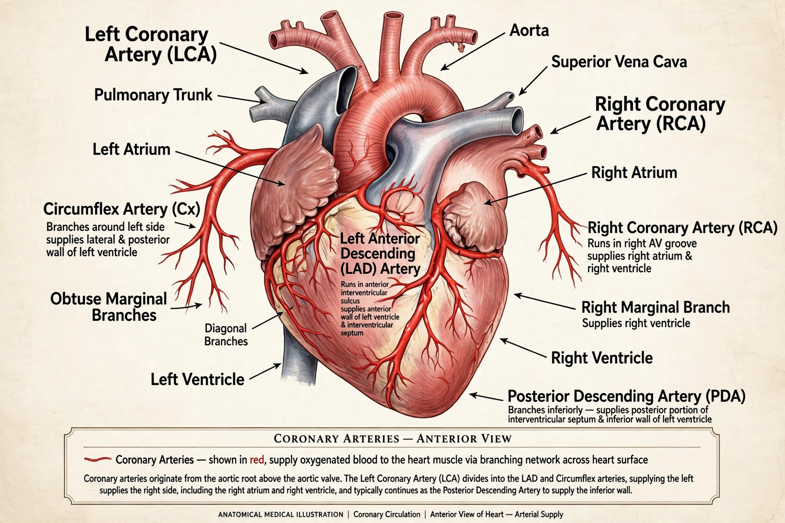

The coronary arteries are the arterial blood vessels of the coronary circulation that transport oxygenated blood to the heart muscle (myocardium). They arise from the aortic root just above the aortic valve and encircle the heart, giving off branches that penetrate the myocardium. The two main vessels are the left coronary artery and the right coronary artery.

| Coronary arteries | |
|---|---|
| Main vessels | Left coronary artery; right coronary artery |
| Left branches | Left anterior descending (LAD); circumflex (LCx) |
| Supplies | Myocardium (heart muscle) |
| Arises from | Ascending aorta (aortic sinuses) |
The left coronary artery (left main coronary artery) arises from the left aortic sinus and quickly divides into the left anterior descending artery (LAD), which runs down the front of the heart in the interventricular groove and supplies the front wall and much of the septum, and the circumflex artery (LCx), which curves around the left side to supply the lateral and posterior walls. The right coronary artery (RCA) arises from the right aortic sinus, runs in the right atrioventricular groove, and supplies the right ventricle, the right atrium, and in most people (right-dominant circulation, about 85%) the posterior descending artery supplying the inferior wall. "Coronary dominance" is defined by which artery gives off the posterior descending branch.
Narrowing of the coronary arteries by atherosclerosis causes coronary artery disease: reduced blood flow produces angina pectoris, and sudden plaque rupture with thrombosis causes myocardial infarction (heart attack). Treatments include medications such as heparin in the acute setting, percutaneous coronary intervention with stents, and coronary artery bypass grafting. Imaging of the arteries is performed by coronary angiography or CT coronary angiography.
Article recreated from memory for the muse-webcrawl project.